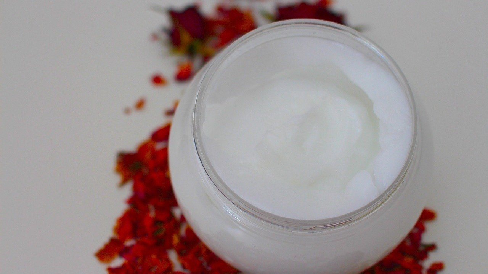
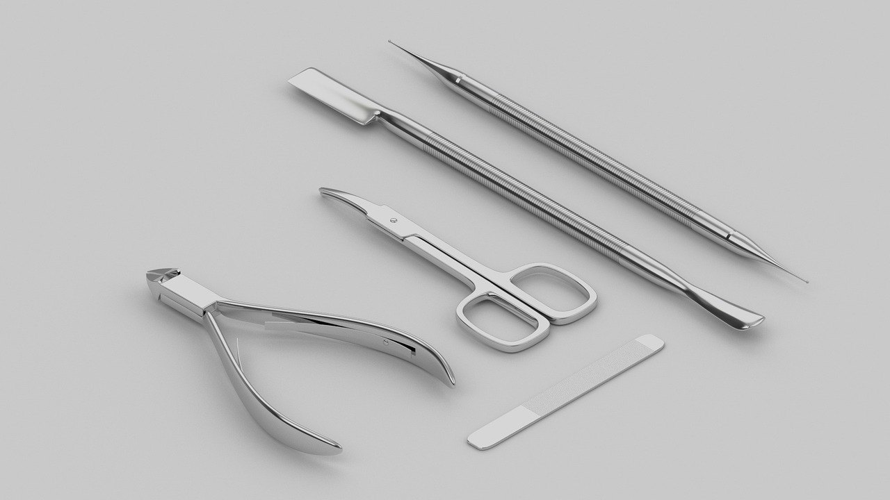

Заусенцы на пальцах: 5 причин, из-за которых они появляются снова и снова

Заусенцы на пальцах обычно замечаешь в самый неподходящий момент: колготки зацепились, шерстяная нитка потянулась, а палец потом ноет весь вечер.
Осенью их становится больше, и это не случайность. Кожа вокруг ногтя тонкая и почти без жира, а отопление, холодный ветер и вода сушат её быстрее, чем кожу ладоней. Сухая кожа трескается, и маленький край отходит от пальца.
Хорошая новость: в большинстве случаев заусенцы появляются из-за пары домашних привычек. Если их поменять, руки становятся спокойнее уже через пару недель.
Посуда без перчаток
Горячая вода и средство для посуды смывают с кожи защитный жир. Ладони это переживают, а кожа у ногтей пересыхает первой, потому что её там очень мало.
Что делать: мыть посуду и делать уборку в резиновых перчатках, а после воды сразу промокнуть руки полотенцем.
Перчатки лучше брать на размер свободнее, с хлопковой подкладкой внутри: руки в них не потеют. Пусть висят прямо у раковины, иначе до них никто не дойдёт.
Даже если перчаток нет под рукой, после посуды можно сразу нанести каплю крема на кожу у ногтей. Это займёт полминуты, а кожа не успеет пересохнуть.
Крем только на ладони
Многие мажут руки кремом быстро, как будто моют: ладонь о ладонь, и готово. До кутикулы и боков ногтя крем при этом почти не доходит.
Что делать: после крема ещё 10–15 секунд втирать остаток в кожу вокруг каждого ногтя круговыми движениями.

Удобнее всего делать это вечером, когда руки уже больше не будут в воде. Крем у кровати работает лучше, чем крем в сумке, потому что про него трудно забыть.
Оторвать, пока никто не видит
Самая понятная и самая коварная привычка. Заусенец тянут пальцами или зубами, а он отрывается вместе с полоской живой кожи. Ранка заживает, по краю снова сохнет, и всё начинается заново.
Что делать: срезать заусенец маленькими острыми кусачками у самого основания, не натягивая кожу.

Перед этим руки хорошо подержать минуту в тёплой воде. Размягчённая кожа срезается ровно, без рваного края, а значит, следующего заусенца ждать дольше.
Кусачки после каждого раза протирают спиртом и хранят отдельно, в чехле. Ножницы для бумаги тут не помощники: они мнут кожу, а не режут её.
Масло, которое стоит на полке
Масло для кутикулы покупают с хорошими намерениями, ставят на полку, и там оно спокойно стоит до весны. А кожа вокруг ногтя сохнет каждый день.
Что делать: наносить по капле масла на каждый ноготь раз в день и втирать, пока не впитается.
Подойдёт и обычное оливковое или миндальное из кухни. Можно ставить его рядом с телефоном: вечером рука к нему тянется сама. Пусть хоть раз телефон сделает что-то полезное для рук.
Батарея на полную, а воздух сухой
Когда отопление работает, воздух в квартире бывает суше, чем в пустыне. Кожа отдаёт влагу всё время, даже если руки не касаются воды.
Что делать: поставить на батарею или рядом с ней миску с водой или повесить влажное полотенце, особенно в спальне.
Если руки сохнут очень сильно, а заусенцы воспаляются и долго не проходят, лучше показать их врачу. Иногда коже не хватает не крема, а чего-то изнутри, и тут нужен совет специалиста.
Вечер, когда руки отдыхают
Вечер, посуда вымыта, на кухне тихо. Я сажусь на диван, беру крем с тумбочки и медленно, палец за пальцем, втираю его вокруг ногтей. Кошка устраивается рядом и внимательно следит, не перепадёт ли и ей что-нибудь.
Две минуты, никакого салона и никаких особых средств. А через пару недель вдруг замечаешь, что колготки больше не цепляются.
А у вас заусенцы появляются чаще осенью или круглый год?